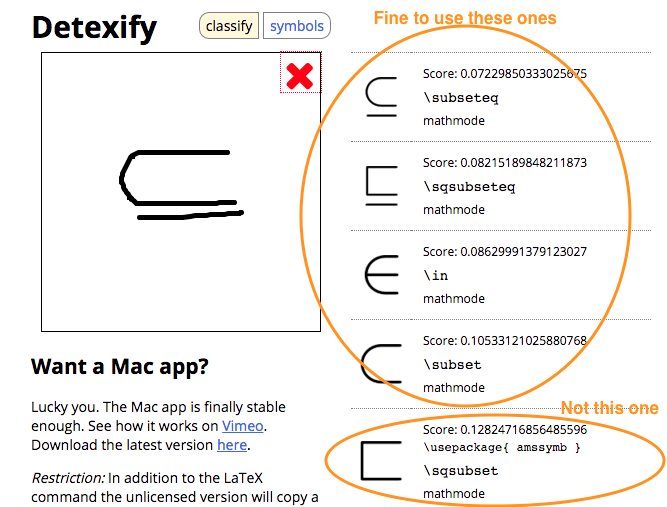

Latex for math expressions¶
Latex is ideal for entering mathematical expressions into your pages. You can also insert Latex expressions into many assessment fields. Codio uses Mathjax for the rendering of all Latex expressions, so certain macros are not supported.
Inline Latex expressions¶
An example of an inline expression is $frac{x^3+1}{x^2-1}$. When your page is shown, the Latex expression will render appropriately.
Display mode Latex expressions¶
You can also render one more more lines of Latex expressions in a more prominent format as shown below.
$$
y=x^2
\sum_{i=0}^n i^2 = \frac{(n^2+n)(2n+1)}{6}
$$
Latex Resources¶
Google is often your friend when it comes to discovering Latex syntax. However, here are two very useful references that will accelerate things for you.
Mathjax¶
Here is a list of Latex commands supported by Mathjax.
Stack Exchange¶
Here is a page on Math StackExchange that has an excellent overview of Mathjax/Latex syntax as well as explaining general concepts.
Click here :Stack Exchange
Detextify¶
Detextify is an excellent way of finding a Latex symbol by free hand drawing it on the screen using your mouse or touchpad.

Important: you should not use commands that are not in the standard package. In the image above, you can see the last one has a usepackage command. Symbols in a special package may not work.